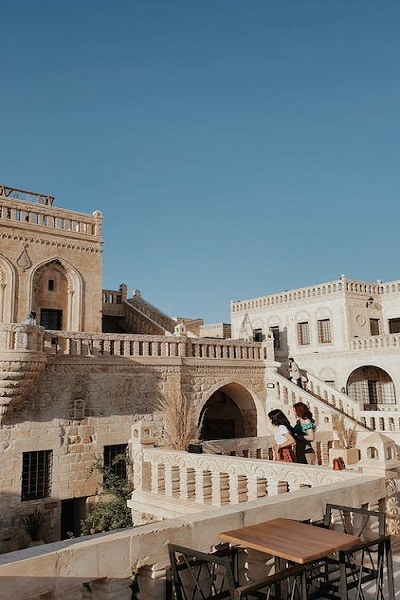
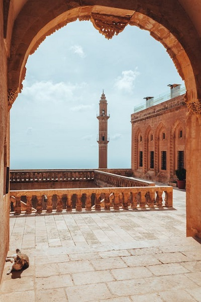
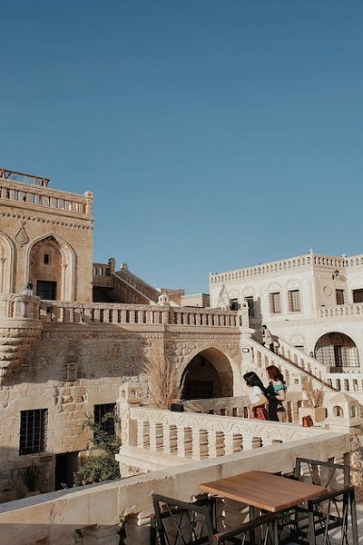
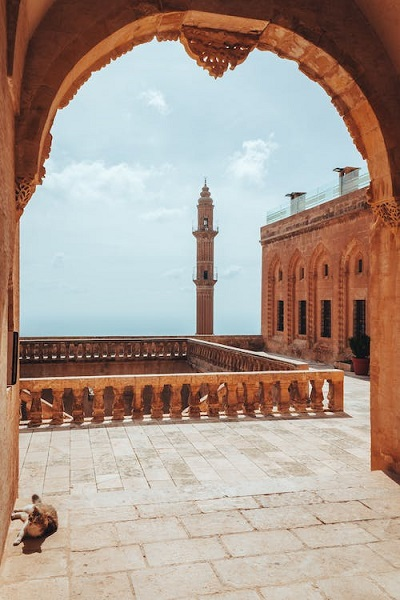
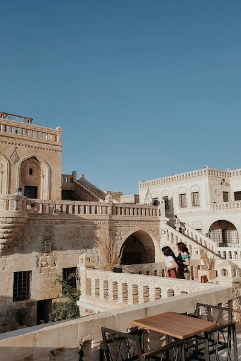
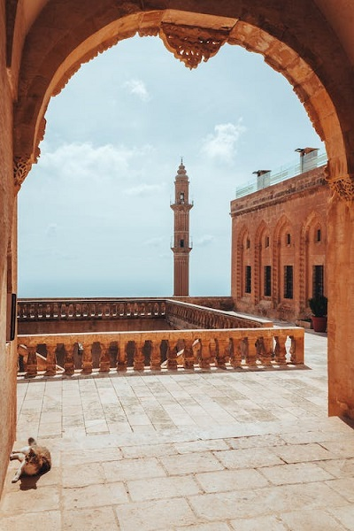

Türkiye'de Mardin ilinin Artuklu İlçesi'nin bir şehri ve merkezidir. Eski şehrinin Artuklu mimarisi ve Dicle Nehri yakınında kayalık bir tepe üzerindeki stratejik konumu ile tanınır. Kentin eski kenti, cephesini korumak için yeni yapılaşmaları yasaklayan UNESCO koruması altındadır


Mardin ili, Güneydoğu Anadolu Bölgesi’nin Dicle bölümünde yer alan bir ildir. Suriye ile sınır komşusudur. Mimari, etnografik, arkeolojik, tarihi ve görsel değerleri ile zamanın durduğu izlenimini veren Güneydoğunun şiirsel kentlerinden biridir. Mardin farklı dini inanışlar paralelinde, sanatsal açıdan da tarihi değeri olan camiler, türbeler, kiliseler, manastır ve benzeri dini eserler barındırmaktadır. Mardin, İpek Yolu güzergahında olup, ilde beş han ve bir kervansaray mevcuttur. Mardin ismi hakkında değişik rivayetler vardır. Kelimenin Farsça, Yunanca, Arapça ve Süryanice olduğu söylenmektedir.
Bir dağın tepesinde kurulmuş olan Mardin, Yukarı Mezopotamya‘nın en eski şehirlerinden biridir.M.Ö.4500’ den başlayarak klasik anlamda yerleşim, gören Mardin, Arami Süryani öz yeridir. Arami/Süryani Subari, Sümer, Akad, Babil, Mitanniler, Asur, Pers, Bizans, Araplar, Selçuklu, Artuklu, Osmanlı Dönemi‘ne ilişkin bir çok yapıyı bünyesinde harmanlayabilmiş önemli bir açık hava müzesidir. Mardin Güneydoğu Anadolu Bölgesi’nde en dikkat çeken, en ilgi gören şehirlerden biridir. Kültür turları denildiğinde Mardin Midyat her zaman ön plandadır. Camileri, kiliseleri, türbeleri ve en önemlisi özgün mimarisi ile her zaman ilgileri üzerine çekmiştir. Mardin Kalesi ilk ziyaret edilmesi gereken yerlerdendir.
Daha sonrasında Zinciriye Medresesi Zinciriye (Sultan İsa) Medresesi Mardin’de hüküm süren son Artuklu Sultanı Melik Necmettin İsa bin Muzaffer Davud bin El Melik Salih tarafından 1385 yılında yaptırılmıştır. Ulu Camii görülme listesine alınmalıdır. Artuklu Dönemi mimari örneklerinden, dilimli kubbesi ve minaresiyle Mardin’in sembolü olan Mardin Ulu Camii kayıtlara göre iki minareli inşa edilmiştir. Caminin bugün mevcut olan tek minaresinin kare kaidesindeki yazıt, yapım tarihini 1176 olarak vermektedir, fakat bugünkü minare 1888/1889 yıllarında yeni ve elektik bir üslupla yapılmıştır. Bazı Süryani yazarlar kiliseden çevrildiğini söylerler. Yapı kiliseden çevrilmemiş olsa bile, yerinde eski bir kilisenin bulunması muhtemeldir.